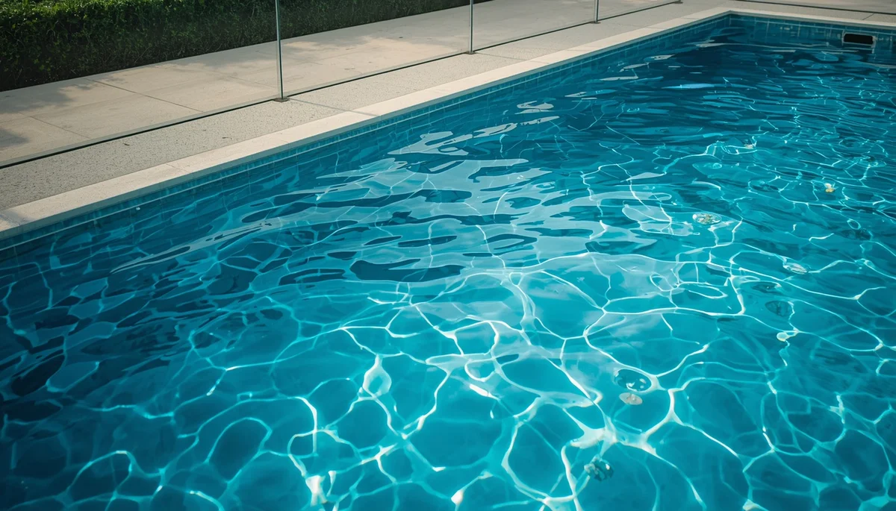
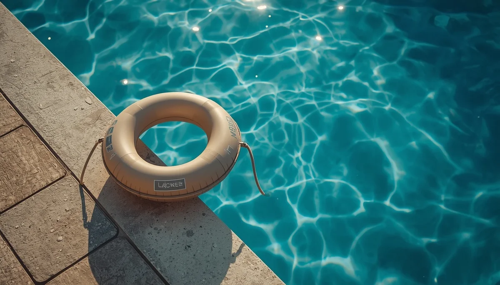

Seguridad acuática: Prevención de ahogamientos en piscinas y playas
La prevención de ahogamientos infantiles requiere una atención constante, barreras físicas efectivas y la asunción de pautas claras de vigilancia tanto en entornos domésticos como en espacios públicos. Conocer los riesgos reales y anticiparse en el medio acuático salva vidas. Pincha en cada tarjeta para profundizar en cada tema.
La realidad de los ahogamientos infantiles
Una aproximación seria y sin alarmismos para entender la rapidez con la que ocurren los incidentes en el medio acuático.
El concepto de supervisión activa continua
Por qué mirar el teléfono o distraerse un solo instante representa el mayor peligro y cómo establecer turnos de vigilancia real.
Barreras físicas y cerramientos en piscinas
La importancia vital de instalar vallas homologadas, puertas con cierre automático y sistemas de alarma perimetral.

El peligro de los flotadores y manguitos
Diferencias clave entre los juguetes de baño y los chalecos salvavidas homologados que realmente garantizan la flotabilidad.
Seguridad en playas y corrientes de retorno
Cómo identificar las banderas del estado del mar, las zonas de baño vigilado y qué hacer ante una corriente de resaca.
Aprender a nadar y familiarización en el agua
El papel de la educación acuática temprana, la pérdida de miedo y la asunción realista de las capacidades de los niños.
Nociones básicas de reanimación y rescate
Qué hacer en caso de emergencia, la importancia de actuar con rapidez y los conceptos fundamentales de los primeros auxilios.
Crear normas de seguridad compartidas
Cómo implicar a toda la familia, establecer reglas claras en las visitas a piscinas y fomentar una cultura de prevención sólida.
🌱 Continúa profundizando en la salud y el bienestar infantil
Para acompañar la crianza y los hábitos de bienestar de forma completa, te sugerimos explorar estos recursos:
- 🧭 Explora la guía relacionada: Primeros auxilios y prevención de accidentes domésticos
- 🎙️ Escucha el podcast: Límites con amor y regulación emocional (Ep. 07)